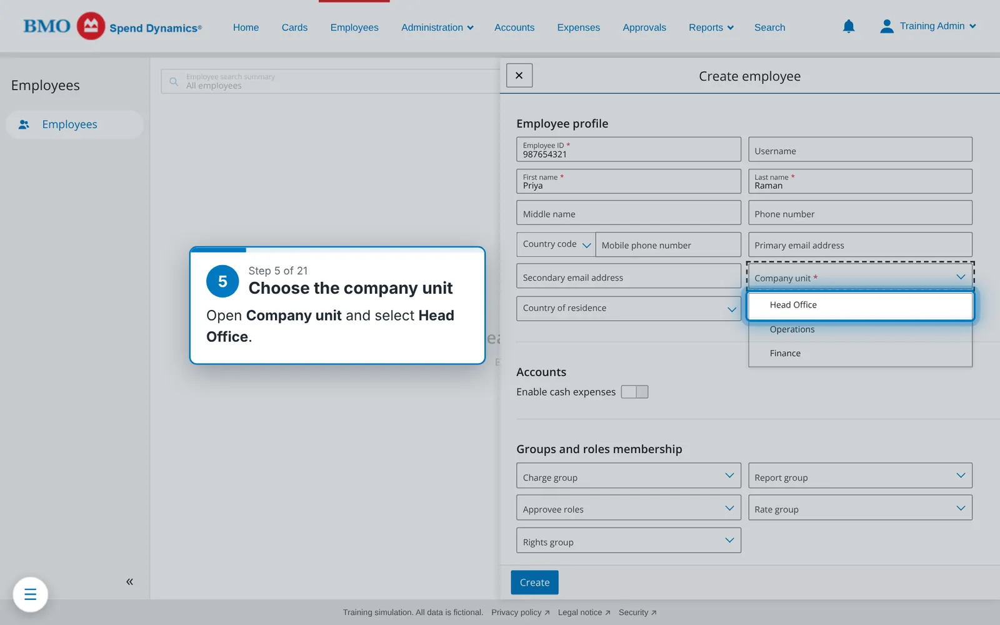
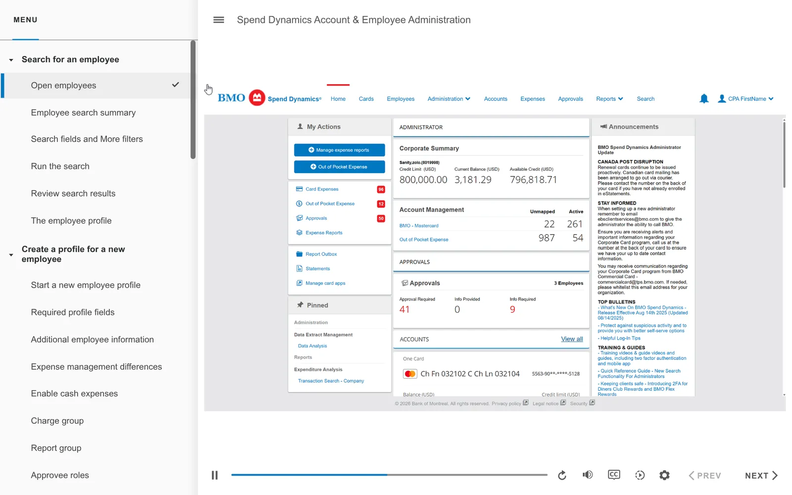
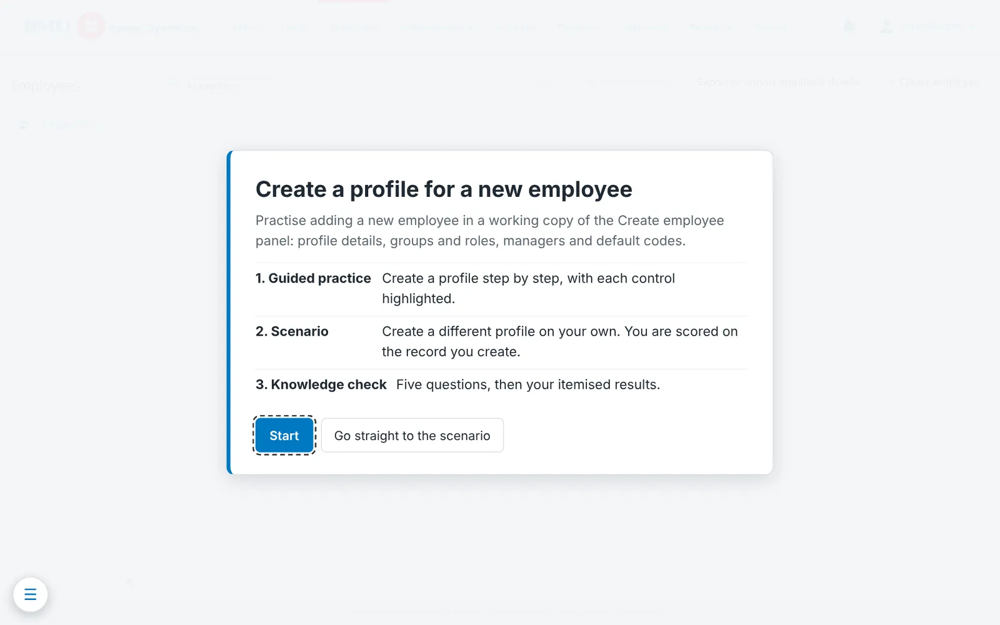

Software simulation for a commercial spending card platform
I rebuilt a narrated software tutorial as a simulation so that system administrators can practise each task on a copy of the platform’s interface.
Open the demo (new tab) Open the original tutorial (new tab)



The need
A national bank recently updated the employee management screens on its commercial spending card platform and needed training for the new workflows quickly. Program administrators at its client companies learned the workflow by watching narrated screen recordings in Storyline. Their first chance to try the tasks was in the live system.
The brief
As part of my freelance work with Beyond the Sky, I was asked to update the Storyline tutorials after the interface changed. I wrote the narration, planned the screen captures, and built the English and French versions. But I wasn’t satisfied with the outcome. So, unprompted, I then spent a few days experimenting with rebuilding a few tasks as a simulation to show the client how the format could work. You can compare the two versions using the links above.
- Role
- Instructional designer and e-learning developer
- Tools
- Storyline, HTML, CSS, JavaScript, Claude
Design decisions
- I turned a narrated slideshow into an interactive simulation so administrators can practise with the same buttons and fields they’ll use on the job.
- I decided on the structure for the simulation, where each task starts with guided practice, is followed by a practical scenario, and then concludes with a knowledge check.
- I placed each instruction beside the control it refers to so administrators can read it without looking away from the task.
- I turned explanations from the original narration into short “Good to know” notes that appear at the step where they apply.
AI
Improving existing learning
What AI did
Claude wrote the HTML, CSS, and JavaScript for the simulation using my screenshots, the original tutorial, and my specifications.
What I did
I chose the tasks, decided on the structure of the simulation, planned how administrators would practise them, checked the content against the platform, and tested every step.